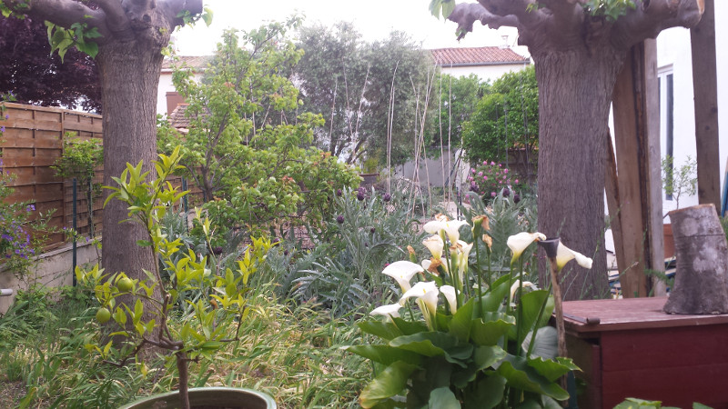

Vendredi 28 avril, invité par Paul Sanches à la conférence SEO campus de Lyon, j'assiste à une dizaine d'exposés sur la manière de tirer ses marrons du feu dans l'univers impitoyable du net, puis passe le weekend chez mes amis Vincent et Constance (et Théodore, 1 an) récemment installés en région lyonnaise et change au dernier moment mon billet de train pour aller passer la soirée des résultats du premier tour chez mes amis Christophe et Wendy qui habitent Genève, plutôt que d'être tout seul dans le train à me morfondre sur la situation politico-économico-philosophico-tout-ça-tout-ça de notre pays ...
Lundi 1er mai, fête du travail, lendemain de 1er tour, Genève - Narbonne en train.
Quatre livres m'ont accompagnés pendant ce voyage. Le mistral était déchaîné pendant l'heure d'attente passée en gare d'Avignon.


Arrivé à la maison, vers 19 heures, je me suis assis dans le canapé de la véranda, face au jardin et j'ai connu un sentiment de plénitude profond.

Ce sentiment de plénitude était du au fait que je savais qu'il y avait une solution au dilemme de ce second tour. Et que cette solution réglerait beaucoup plus qu'une simple élection. Que nous allions changer la société. J'ai affronté toutes mes peurs. Je les ai regardées droits dans yeux et elles ont disparues. J'ai eu le sentiment de comprendre tous les mécanismes des relations humaines et de ce qu'il fallait changer dans la société pour qu'en restant capitaliste et dans le monde moderne nous ne perdions pas notre âme. Les rencontres humaines vécues pendant 3 jours ajoutées à mes lectures et mes convictions, m'ont données une grande force. C'est ce que j'explique dans ma lettre ouverte à un capitaliste que j'ai rédigée pendant 4 jours et 4 nuits quasiment d'affilée me nourrissant de l'énergie de notre impuissance pour vous proposer ma vision de l'économie capitaliste, car nous sommes tous capitaliste !
J'ai allumé l'ordinateur, je me suis concentré pendant deux, trois ou quatre heures, je ne me souviens plus, passant et repassant mentalement ce que je voulais dire pour transmettre ma certitude que l'énergie collective que nous créons quand nous nous regroupons et notre volonté d'améliorer le système peut avoir raison de tous les systèmes qu'on tente de nous imposer. Depuis la nuit des temps, les Hommes se regroupent en Cercle pour discuter de l'organisation de la Société. Non seulement il est temps que les Femmes soient présentes dans le Cercle mais surtout que ce soit elles qui aient le dernier mot car ce sont elles qui protègent la vie ! Depuis que les tribus n'existent plus et que nous sommes organisés en ville, le Cercle des Hommes a été remplacé par le cénacle des Élus. Le temps est venu de reformer des Cercles Humains pour construire une société débarrassée des parasites qui nous gouvernent et dirigent notre économie. Voici le résultat, sans coupage ni trucage ni effets spéciaux et en une seule prise ;-)
Publié le Mardi 2 mai 2017
"Au milieu de la nuit ..."